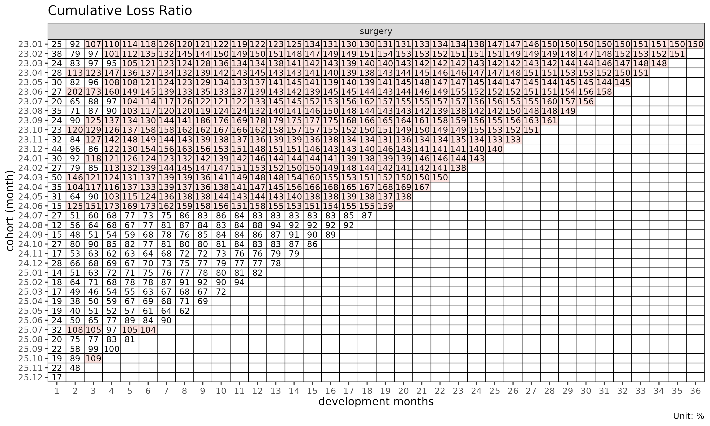
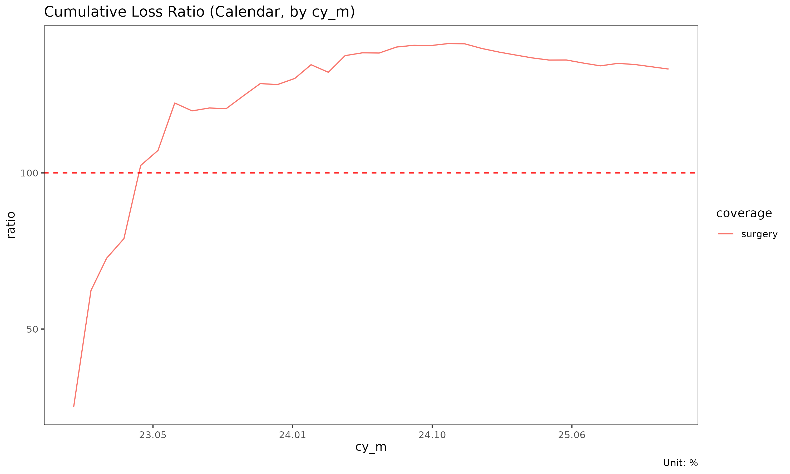
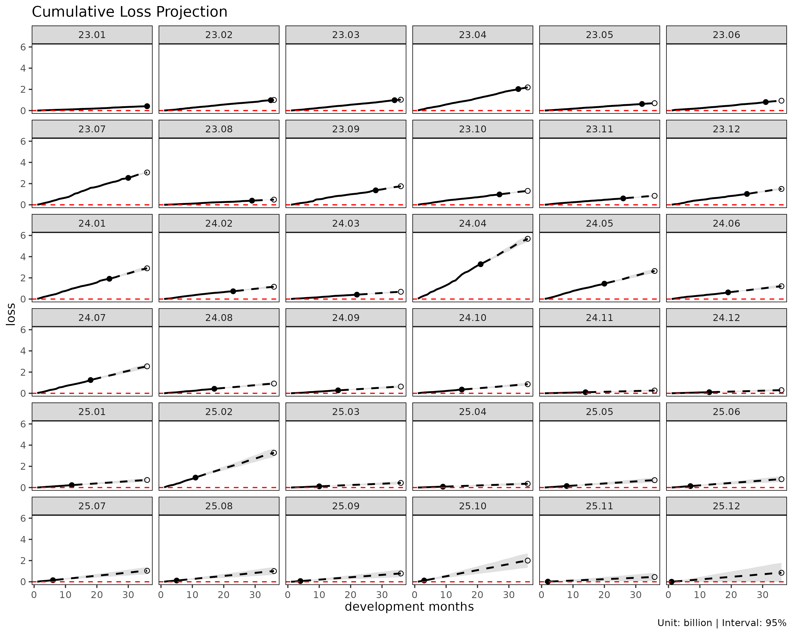
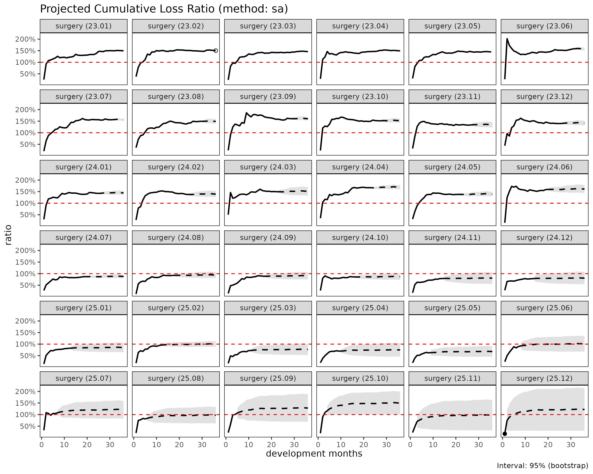
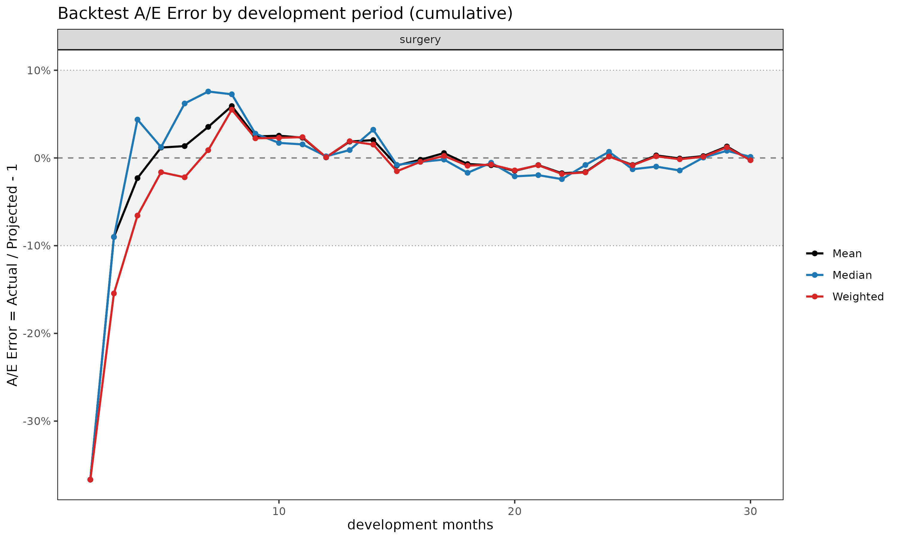
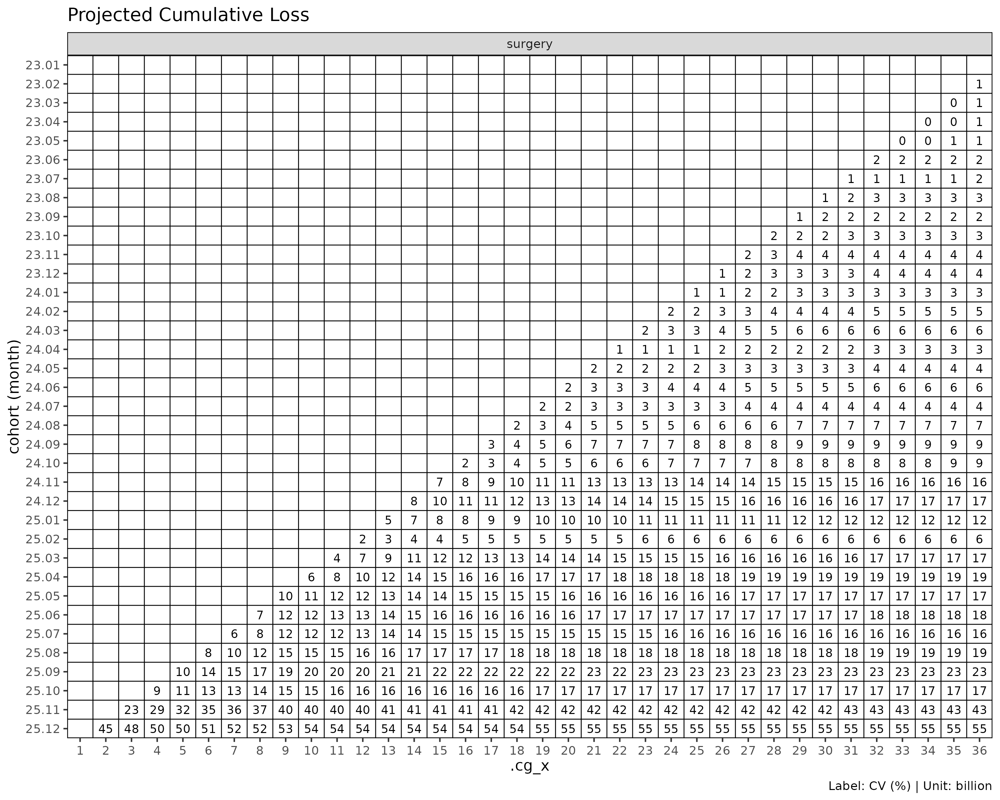

이 문서는 lossratio 패키지의 핵심 함수들을 데이터 준비 -> 적합 -> 진단 -> 검증 -> 시각화 순서로 처음부터 끝까지 따라가는 시작용 자료다. 각 단계마다 무엇을 호출하는지, 왜 그렇게 동작하는지, 결과를 어떻게 읽는지 를 함께 설명한다. 이 한 편만 따라 읽으면 패키지의 전체 작업 흐름을 파악할 수 있도록 구성했다.
1. 이 패키지가 푸는 문제
장기 건강보험은 한 번 인수한 계약이 수십 년간 유지된다. 그래서 어떤 인수 시점(코호트)의 계약군이 시간이 지나며 손해율을 어떻게 쌓아 가는지를 미리 내다보는 것이 핵심 과제다.
lossratio 는 이 문제를 코호트 x 경과기간(cohort x dev) 격자 위에서 다룬다.
- 코호트(cohort) – 계약을 인수한 시점 (예: 2023년 1월 인수분).
- 경과기간(development period, dev) – 인수 후 흐른 기간.
각 셀에는 누적 손해(loss)와 누적
보험료(premium)가 들어가고, 손해율은
ratio = loss / premium 로 정의된다. 아직 관측되지 않은 미래
경과기간의 셀을 추정하는 것이 “예측”이며, 이 패키지의 여러
fit_* 함수가 서로 다른 방법으로 그 추정을 수행한다.
2. 데이터: experience
패키지에는 합성 experience 데이터가 내장돼 있다.
experience 는 도메인 표준어로, 실제 계리
경험통계(experience study)의 셀 단위 기록을 가리킨다. long-format
테이블이며 한 행은 (코호트 x 경과기간 x 그룹) 셀 하나에 대응한다.
data(experience)
str(experience)
#> Classes 'data.table' and 'data.frame': 2664 obs. of 15 variables:
#> $ coverage : chr "ci" "ci" "ci" "ci" ...
#> $ uy : Date, format: "2023-01-01" "2023-01-01" ...
#> $ uy_h : Date, format: "2023-01-01" "2023-01-01" ...
#> $ uy_q : Date, format: "2023-01-01" "2023-01-01" ...
#> $ uy_m : Date, format: "2023-01-01" "2023-01-01" ...
#> $ cy : Date, format: "2023-01-01" "2023-01-01" ...
#> $ cy_h : Date, format: "2023-01-01" "2023-01-01" ...
#> $ cy_q : Date, format: "2023-01-01" "2023-01-01" ...
#> $ cy_m : Date, format: "2023-01-01" "2023-02-01" ...
#> $ dev_y : int 1 1 1 1 1 1 1 1 1 1 ...
#> $ dev_h : int 1 1 1 1 1 1 2 2 2 2 ...
#> $ dev_q : int 1 1 1 2 2 2 3 3 3 4 ...
#> $ dev_m : int 1 2 3 4 5 6 7 8 9 10 ...
#> $ incr_loss : num 1262380 11255763 11281309 33602387 7152622 ...
#> $ incr_premium: num 27993106 29183931 29401966 26570540 27471886 ...
#> - attr(*, ".internal.selfref")=<pointer: (nil)>
head(experience)
#> coverage uy uy_h uy_q uy_m cy cy_h
#> <char> <Date> <Date> <Date> <Date> <Date> <Date>
#> 1: ci 2023-01-01 2023-01-01 2023-01-01 2023-01-01 2023-01-01 2023-01-01
#> 2: ci 2023-01-01 2023-01-01 2023-01-01 2023-01-01 2023-01-01 2023-01-01
#> 3: ci 2023-01-01 2023-01-01 2023-01-01 2023-01-01 2023-01-01 2023-01-01
#> 4: ci 2023-01-01 2023-01-01 2023-01-01 2023-01-01 2023-01-01 2023-01-01
#> 5: ci 2023-01-01 2023-01-01 2023-01-01 2023-01-01 2023-01-01 2023-01-01
#> 6: ci 2023-01-01 2023-01-01 2023-01-01 2023-01-01 2023-01-01 2023-01-01
#> cy_q cy_m dev_y dev_h dev_q dev_m incr_loss incr_premium
#> <Date> <Date> <int> <int> <int> <int> <num> <num>
#> 1: 2023-01-01 2023-01-01 1 1 1 1 1262380 27993106
#> 2: 2023-01-01 2023-02-01 1 1 1 2 11255763 29183931
#> 3: 2023-01-01 2023-03-01 1 1 1 3 11281309 29401966
#> 4: 2023-04-01 2023-04-01 1 1 2 4 33602387 26570540
#> 5: 2023-04-01 2023-05-01 1 1 2 5 7152622 27471886
#> 6: 2023-04-01 2023-06-01 1 1 2 6 10110525 26769360핵심 컬럼만 보면 다음과 같다.
-
coverage– 담보(그룹). surgery / ci / cancer / death 네 종목. -
uy_m– 인수월(underwriting month). 코호트 축의 원본 컬럼. -
cy_m– 달력월(calendar month). -
dev_m– 경과월(development month). -
incr_loss,incr_premium– 증분(기간별) 손해와 보험료.
입력이 증분이라는 점에 주목한다. raw experience 는 보통 “이번 달에 얼마가 발생/경과했는가” 형태로 쌓이기 때문이다. 누적값은 패키지가 내부에서 만든다.
3. Triangle 만들기 – as_triangle()
as_triangle() 는 raw experience 를 표준
Triangle 객체로 바꾼다. 검증 + 좌표 표준화 + 집계를 한
번에 수행한다.
tri <- as_triangle(
experience,
groups = "coverage",
cohort = "uy_m",
calendar = "cy_m",
loss = "incr_loss",
premium = "incr_premium"
)
tri
#> shape: (2_664, 18)
#> ┌──────────┬───────────┬────────────┬───┬───────────────┬────────────────┐
#> │ coverage ┆ n_cohorts ┆ cohort ┆ … ┆ premium_share ┆ incr_premium_… │
#> │ <chr> ┆ <int> ┆ <date> ┆ … ┆ <dbl> ┆ <dbl> │
#> ├──────────┼───────────┼────────────┼───┼───────────────┼────────────────┤
#> │ ci ┆ 36 ┆ 2023-01-01 ┆ … ┆ 0.381171 ┆ 0.381171 │
#> │ ci ┆ 35 ┆ 2023-01-01 ┆ … ┆ 0.380346 ┆ 0.379558 │
#> │ ci ┆ 34 ┆ 2023-01-01 ┆ … ┆ 0.387352 ┆ 0.401744 │
#> │ ci ┆ 33 ┆ 2023-01-01 ┆ … ┆ 0.379535 ┆ 0.356118 │
#> │ ci ┆ 32 ┆ 2023-01-01 ┆ … ┆ 0.377646 ┆ 0.370060 │
#> │ … ┆ … ┆ … ┆ … ┆ … ┆ … │
#> │ surgery ┆ 35 ┆ 2025-10-01 ┆ … ┆ 0.872357 ┆ 0.874228 │
#> │ surgery ┆ 34 ┆ 2025-10-01 ┆ … ┆ 0.874537 ┆ 0.878680 │
#> │ surgery ┆ 36 ┆ 2025-11-01 ┆ … ┆ 0.667521 ┆ 0.667521 │
#> │ surgery ┆ 35 ┆ 2025-11-01 ┆ … ┆ 0.669140 ┆ 0.670648 │
#> │ surgery ┆ 36 ┆ 2025-12-01 ┆ … ┆ 0.544008 ┆ 0.544008 │
#> └──────────┴───────────┴────────────┴───┴───────────────┴────────────────┘
#> 13 more variables: dev <int>, loss <dbl>, incr_loss <dbl>, premium <dbl>,
#> incr_premium <dbl>, ratio <dbl>, incr_ratio <dbl>,
#> margin <dbl>, incr_margin <dbl>, profit <fct>,
#> incr_profit <fct>, loss_share <dbl>, incr_loss_share <dbl>as_triangle() 의 동작을 풀어 보면 다음과 같다.
- 필수 컬럼의 존재를 확인하고 expected type 으로 코어션한다,
- 인구통계 차원을 집계해 제거한다,
- 누적 컬럼(
loss,premium)과 파생 지표(margin,ratio,loss_share,premium_share)를 추가한다, - 원본 컬럼명(
uy_m,incr_loss등)을 표준 이름(cohort,dev,loss,premium…)으로 rename 하고, 원본명은 attribute 에 보존한다.
출력 컬럼은 누적이 기본이고 증분은
incr_ 접두사를 붙인다 –
loss/incr_loss,
premium/incr_premium,
ratio/incr_ratio.
이미 누적 삼각형을 갖고 있다면 cell_type = "cumulative"
를 주면 된다. 그러면 as_triangle() 가 코호트별로 차분해
증분을 자동 산출한다.
# 누적 손해/보험료를 가진 경우
as_triangle(df_cumulative,
groups = "coverage", cohort = "uy_m", calendar = "cy_m",
loss = "loss", premium = "premium",
cell_type = "cumulative")이후 설명은 한 종목만 떼어 단일 그룹으로 진행하면 출력이 깔끔하다.
tri1 <- as_triangle(
experience[coverage == "surgery"],
groups = "coverage",
cohort = "uy_m",
calendar = "cy_m",
loss = "incr_loss",
premium = "incr_premium"
)Triangle 자체를 히트맵으로 볼 수 있다.
plot_triangle(tri1, metric = "ratio")
대각선 윗쪽(관측 영역)만 값이 차 있고, 아래쪽 빈 곳이 앞으로 예측해야 할 미래 셀이다.
4. Calendar 와 Total – 다른 집계 관점
같은 experience 데이터는 분석 질문에 따라 세 가지 방식으로 집계할 수 있고, 빌더도 셋이다.
| 빌더 | 출력 객체 | 차원 | 사용 시점 |
|---|---|---|---|
as_triangle() |
Triangle |
코호트 x dev (2D) | SA, ED, CL 예측 |
as_calendar() |
Calendar |
달력 기간 (1D) | 달력 추세, 대각선 효과 |
as_total() |
Total |
포트폴리오 합계 (그룹별) | 상위 수준 손해율 비교 |
Calendar 는 코호트를 대각선 위로 합산한다 – 각 행이
모든 인수 코호트에 걸친 하나의 달력 기간이며, 수학적으로 Triangle 의
대각선 합과 동치다. 손해율의 달력 추세나 대각선 효과(calendar-year
effect) 점검에 쓴다. t 컬럼은 그룹 내 순차 인덱스(1, 2, 3,
…)일 뿐 경과기간이 아니다.
cal <- as_calendar(tri1)
head(cal)
#> shape: (6, 18)
#> ┌──────────┬────────────┬─────────┬───┬───────────────┬────────────────┐
#> │ coverage ┆ calendar ┆ cal_idx ┆ … ┆ premium_share ┆ incr_premium_… │
#> │ <chr> ┆ <date> ┆ <int> ┆ … ┆ <dbl> ┆ <dbl> │
#> ├──────────┼────────────┼─────────┼───┼───────────────┼────────────────┤
#> │ surgery ┆ 2023-01-01 ┆ 1 ┆ … ┆ 1 ┆ 1 │
#> │ surgery ┆ 2023-02-01 ┆ 2 ┆ … ┆ 1 ┆ 1 │
#> │ surgery ┆ 2023-03-01 ┆ 3 ┆ … ┆ 1 ┆ 1 │
#> │ surgery ┆ 2023-04-01 ┆ 4 ┆ … ┆ 1 ┆ 1 │
#> │ surgery ┆ 2023-05-01 ┆ 5 ┆ … ┆ 1 ┆ 1 │
#> │ surgery ┆ 2023-06-01 ┆ 6 ┆ … ┆ 1 ┆ 1 │
#> └──────────┴────────────┴─────────┴───┴───────────────┴────────────────┘
#> 13 more variables: n_cohorts <int>, loss <dbl>, incr_loss <dbl>, premium <dbl>,
#> incr_premium <dbl>, ratio <dbl>, incr_ratio <dbl>,
#> margin <dbl>, incr_margin <dbl>, profit <fct>,
#> incr_profit <fct>, loss_share <dbl>, incr_loss_share <dbl>
plot(cal) # x axis: calendar (Date)
Total 은 두 차원을 모두 합쳐 그룹당 한 값으로
축약한다. 담보별 전체 손해율 비교 같은 포트폴리오 수준 질문에 쓴다.
period_from / period_to 로 기간을 맞추면 그룹
간 비교 가능성이 확보된다.
tot <- as_total(tri1)
head(tot)
#> shape: (1, 9)
#> ┌──────────┬───────────┬─────────────┬───┬────────────┬───────────────┐
#> │ coverage ┆ n_cohorts ┆ sales_start ┆ … ┆ loss_share ┆ premium_share │
#> │ <chr> ┆ <int> ┆ <date> ┆ … ┆ <dbl> ┆ <dbl> │
#> ├──────────┼───────────┼─────────────┼───┼────────────┼───────────────┤
#> │ surgery ┆ 36 ┆ 2023-01-01 ┆ … ┆ 1 ┆ 1 │
#> └──────────┴───────────┴─────────────┴───┴────────────┴───────────────┘
#> 4 more variables: sales_end <date>, loss <dbl>, premium <dbl>, ratio <dbl>이후 예측 절차는 모두 Triangle 을 입력으로 쓴다.
5. 손해 전개를 보는 두 관점
미래 셀을 추정하려면 “손해가 경과기간에 따라 어떻게 늘어나는가”를 모형으로 표현해야 한다. lossratio 는 두 가지 기본 관점을 쓴다.
-
곱셈형 – chain ladder (CL). 다음 경과기간의 누적
손해는 현재의 배수다:
C_{k+1} = f_k * C_k. 여기서f_k가 ATA 인자(age-to-age factor)이며, 인접한 두 경과기간의 누적 손해 비율로 추정한다. -
가법형 – 노출 기반(exposure-driven, ED). 다음
기간의 손해 증분 을 보험료에 비례시킨다:
Δloss = g_k * premium.g_k는 단위 보험료당 손해 강도다.
둘은 서로 보완적이다. 경과 초기에는 누적 손해가 작아 ATA 인자가 크게 출렁이므로 보험료에 닻을 내리는 ED 가 안정적이고, 경과가 무르익으면 ATA 인자가 안정되어 CL 이 코호트의 관측 수준을 잘 보존한다.
링크 단계 진단 – as_link()
Triangle 에서 연속한 두 경과기간을 잇는 Link 객체를
만들면, 위 두 인자를 적합 전에 직접 점검할 수 있다.
as_link() 에 loss 만 주면 관측된 ATA 인자를,
exposure 까지 주면 ED 강도 g_k 를 담는다 –
워커 레이어에서 보험료 컬럼은 exposure 인자로 받는다.
ata <- as_link(tri1, loss = "loss") # ATA 모드
ed <- as_link(tri1, loss = "loss", exposure = "premium") # ED 모드
head(summary(ata, model = "ata"))
#> Key: <coverage>
#> coverage ata_from ata_to ata_link mean median wt cv f f_se rse
#> <char> <num> <num> <fctr> <num> <num> <num> <num> <num> <num> <num>
#> 1: surgery 1 2 1-2 6.595 6.089 6.163 0.427 6.163 0.382 0.062
#> 2: surgery 2 3 2-3 1.765 1.768 1.739 0.157 1.739 0.042 0.024
#> 3: surgery 3 4 3-4 1.435 1.400 1.418 0.105 1.418 0.027 0.019
#> 4: surgery 4 5 4-5 1.324 1.331 1.339 0.068 1.339 0.018 0.014
#> 5: surgery 5 6 5-6 1.267 1.246 1.243 0.070 1.243 0.016 0.013
#> 6: surgery 6 7 6-7 1.204 1.194 1.205 0.048 1.205 0.011 0.009
#> sigma n_cohorts n_valid n_inf n_nan valid_ratio
#> <num> <num> <num> <num> <num> <num>
#> 1: 6207.618 35 35 0 0 1
#> 2: 1689.250 34 34 0 0 1
#> 3: 1372.883 33 33 0 0 1
#> 4: 1105.053 32 32 0 0 1
#> 5: 1086.826 31 31 0 0 1
#> 6: 812.770 30 30 0 0 1summary(link, model = "ata"|"ed") 는 링크별 mean /
median / cv / f(또는 g) 등 인자 통계를
산출한다. 이 통계가 뒤에서 성숙점 검출을 구동한다. 더 깊은 진단은
vignette("getting-started") 를 참고한다.
6. fit_cl() – chain ladder
fit_cl() 은 누적 loss 위에서 Mack(1993)
방식의 chain ladder 적합을 수행한다.
cl <- fit_cl(tri1)
summary(cl)
#> coverage cohort latest loss_ult reserve loss_proc_se
#> <char> <Date> <num> <num> <num> <num>
#> 1: surgery 2023-01-01 410248522 410248522 0 0
#> 2: surgery 2023-02-01 976330445 1001441303 25110858 2751819
#> 3: surgery 2023-03-01 978486045 1026151243 47665198 3967869
#> 4: surgery 2023-04-01 2029909919 2186771221 156861302 6942937
#> 5: surgery 2023-05-01 624219436 697669301 73449865 4455636
#> 6: surgery 2023-06-01 802880717 931393934 128513217 17869565
#> 7: surgery 2023-07-01 2539141549 3050990158 511848609 35918003
#> 8: surgery 2023-08-01 393678329 488218204 94539875 15583801
#> 9: surgery 2023-09-01 1364052542 1751869308 387816766 38001618
#> 10: surgery 2023-10-01 979266043 1311793843 332527800 38496097
#> 11: surgery 2023-11-01 604685679 848103123 243417444 35719579
#> 12: surgery 2023-12-01 1026345366 1497869029 471523663 51405333
#> 13: surgery 2024-01-01 1912177598 2901492851 989315253 75674312
#> 14: surgery 2024-02-01 733902485 1160045952 426143467 51719398
#> 15: surgery 2024-03-01 415459873 686574148 271114275 41313266
#> 16: surgery 2024-04-01 3286053526 5687484014 2401430488 122770258
#> 17: surgery 2024-05-01 1451731153 2645801838 1194070685 93024106
#> 18: surgery 2024-06-01 629668308 1209024555 579356247 65346187
#> 19: surgery 2024-07-01 1250954693 2542927190 1291972497 103136528
#> 20: surgery 2024-08-01 425346694 918120582 492773888 65317866
#> 21: surgery 2024-09-01 278156543 635470028 357313485 56737053
#> 22: surgery 2024-10-01 352070323 856446521 504376198 68091257
#> 23: surgery 2024-11-01 99050501 260916096 161865595 41787166
#> 24: surgery 2024-12-01 103194013 295637296 192443283 49617195
#> 25: surgery 2025-01-01 227089025 710560093 483471068 83635489
#> 26: surgery 2025-02-01 939163074 3276849152 2337686078 192418633
#> 27: surgery 2025-03-01 112828845 434950057 322121212 72345359
#> 28: surgery 2025-04-01 82472453 356301148 273828695 68974257
#> 29: surgery 2025-05-01 141214851 697290587 556075736 119238986
#> 30: surgery 2025-06-01 136406102 789468799 653062697 136628652
#> 31: surgery 2025-07-01 149144024 1040451732 891307708 167039609
#> 32: surgery 2025-08-01 116327076 1008356733 892029657 183653360
#> 33: surgery 2025-09-01 67465470 783000257 715534787 179947037
#> 34: surgery 2025-10-01 121626173 2001214863 1879588690 337103186
#> 35: surgery 2025-11-01 15716444 449653406 433936962 194100658
#> 36: surgery 2025-12-01 4825085 850839118 846014033 472741759
#> coverage cohort latest loss_ult reserve loss_proc_se
#> <char> <Date> <num> <num> <num> <num>
#> loss_param_se loss_total_se loss_total_cv
#> <num> <num> <num>
#> 1: 0 0 0.000000000
#> 2: 4299412 5104650 0.005097304
#> 3: 5021196 6399718 0.006236623
#> 4: 11297887 13260717 0.006064062
#> 5: 3696918 5789637 0.008298541
#> 6: 8694892 19872657 0.021336469
#> 7: 30501066 47121311 0.015444596
#> 8: 5072721 16388635 0.033568259
#> 9: 20827314 43334744 0.024736288
#> 10: 16992221 42079509 0.032077837
#> 11: 11901733 37650227 0.044393454
#> 12: 22008504 55918535 0.037332059
#> 13: 43971810 87522121 0.030164514
#> 14: 18269127 54851227 0.047283667
#> 15: 11014493 42756344 0.062274911
#> 16: 92689755 153830838 0.027047256
#> 17: 45040851 103354548 0.039063601
#> 18: 20907249 68609309 0.056747655
#> 19: 45568404 112754702 0.044340515
#> 20: 16819267 67448584 0.073463753
#> 21: 11859688 57963310 0.091213288
#> 22: 16219631 69996398 0.081728860
#> 23: 5190764 42108328 0.161386470
#> 24: 6221683 50005754 0.169145620
#> 25: 15668260 85090478 0.119751276
#> 26: 75222224 206599403 0.063048188
#> 27: 10161412 73055495 0.167962950
#> 28: 8575343 69505285 0.195074548
#> 29: 19174475 120770842 0.173200161
#> 30: 22834478 138523651 0.175464377
#> 31: 31445935 169973756 0.163365345
#> 32: 32987225 186592373 0.185045993
#> 33: 27713231 182068556 0.232526816
#> 34: 80113491 346492034 0.173140846
#> 35: 21034520 195237078 0.434194593
#> 36: 66075497 477337136 0.561019265
#> loss_param_se loss_total_se loss_total_cv
#> <num> <num> <num>summary() 는 코호트별 ultimate 손해와
표준오차(loss_total_se),
변동계수(loss_total_cv)를 보여준다. 표준오차는 Mack 의 분산
분해를 따라 과정오차(process) 와 모수오차(parameter)
의 합으로 산출된다.
$full 슬롯에는 관측 + 예측 전 영역의 셀별 결과가 들어
있다.
head(cl$full[, c("cohort", "dev", "loss_obs", "loss_proj",
"loss_total_se", "is_observed")])
#> cohort dev loss_obs loss_proj loss_total_se is_observed
#> <Date> <int> <num> <num> <num> <lgcl>
#> 1: 2023-01-01 1 1886123 1886123 0 TRUE
#> 2: 2023-01-01 2 14030514 14030514 0 TRUE
#> 3: 2023-01-01 3 24427715 24427715 0 TRUE
#> 4: 2023-01-01 4 34672477 34672477 0 TRUE
#> 5: 2023-01-01 5 44990229 44990229 0 TRUE
#> 6: 2023-01-01 6 55621697 55621697 0 TRUE투영 곡선을 보면 코호트별 관측(실선)과 예측(점선)이 이어진다.
plot(cl)
7. fit_ed() – 노출 기반
fit_ed() 는 같은 삼각형을 가법형 ED 모형으로
적합한다.
ed_fit <- fit_ed(tri1)
summary(ed_fit)
#> Key: <coverage>
#> coverage ata_from ata_to ata_link mean median wt cv g
#> <char> <num> <num> <fctr> <num> <num> <num> <num> <num>
#> 1: surgery 1 2 1-2 1.34661 1.21766 1.31614 0.47327 1.31614
#> 2: surgery 2 3 2-3 0.58109 0.56432 0.58674 0.37381 0.58674
#> 3: surgery 3 4 3-4 0.39105 0.36751 0.38178 0.43535 0.38178
#> 4: surgery 4 5 4-5 0.31110 0.32321 0.33127 0.35969 0.33127
#> 5: surgery 5 6 5-6 0.27543 0.25088 0.25518 0.43531 0.25518
#> 6: surgery 6 7 6-7 0.21364 0.20479 0.22393 0.31371 0.22393
#> 7: surgery 7 8 7-8 0.18072 0.18227 0.19476 0.36392 0.19476
#> 8: surgery 8 9 8-9 0.16798 0.15484 0.16849 0.67814 0.16849
#> 9: surgery 9 10 9-10 0.14955 0.13195 0.14572 0.33906 0.14572
#> 10: surgery 10 11 10-11 0.12550 0.12095 0.12851 0.31241 0.12851
#> 11: surgery 11 12 11-12 0.13833 0.12898 0.14581 0.39551 0.14581
#> 12: surgery 12 13 12-13 0.12519 0.11356 0.12075 0.34186 0.12075
#> 13: surgery 13 14 13-14 0.11144 0.10927 0.11631 0.35239 0.11631
#> 14: surgery 14 15 14-15 0.10561 0.09421 0.11169 0.43662 0.11169
#> 15: surgery 15 16 15-16 0.08954 0.08726 0.08964 0.34359 0.08964
#> 16: surgery 16 17 16-17 0.08079 0.07993 0.08162 0.24700 0.08162
#> 17: surgery 17 18 17-18 0.08109 0.07612 0.08725 0.28780 0.08725
#> 18: surgery 18 19 18-19 0.08636 0.08620 0.08772 0.34300 0.08772
#> 19: surgery 19 20 19-20 0.07944 0.07838 0.08008 0.25109 0.08008
#> 20: surgery 20 21 20-21 0.07789 0.07935 0.08007 0.32197 0.08007
#> 21: surgery 21 22 21-22 0.06746 0.06606 0.06982 0.26290 0.06982
#> 22: surgery 22 23 22-23 0.06748 0.06394 0.06703 0.32299 0.06703
#> 23: surgery 23 24 23-24 0.06644 0.05971 0.06165 0.39463 0.06165
#> 24: surgery 24 25 24-25 0.06303 0.05711 0.05902 0.45911 0.05902
#> 25: surgery 25 26 25-26 0.06696 0.06136 0.06056 0.39347 0.06056
#> 26: surgery 26 27 26-27 0.06265 0.05387 0.07093 0.44081 0.07093
#> 27: surgery 27 28 27-28 0.06010 0.05136 0.06550 0.36862 0.06550
#> 28: surgery 28 29 28-29 0.06012 0.06544 0.05404 0.31348 0.05404
#> 29: surgery 29 30 29-30 0.05275 0.04745 0.04877 0.23587 0.04877
#> 30: surgery 30 31 30-31 0.05437 0.04834 0.05359 0.25583 0.05359
#> 31: surgery 31 32 31-32 0.06003 0.05618 0.05643 0.41162 0.05643
#> 32: surgery 32 33 32-33 0.05749 0.05671 0.05622 0.07265 0.05622
#> 33: surgery 33 34 33-34 0.04049 0.03873 0.04100 0.08481 0.04100
#> 34: surgery 34 35 34-35 0.03562 0.03562 0.03403 0.15183 0.03403
#> 35: surgery 35 36 35-36 0.03864 0.03864 0.03864 NA 0.03864
#> coverage ata_from ata_to ata_link mean median wt cv g
#> <char> <num> <num> <fctr> <num> <num> <num> <num> <num>
#> g_se rse sigma n_cohorts n_valid n_inf n_nan valid_ratio
#> <num> <num> <num> <num> <num> <num> <num> <num>
#> 1: 0.09107 0.06919 2930.74379 35 35 0 0 1
#> 2: 0.03508 0.05979 1580.26206 34 34 0 0 1
#> 3: 0.02931 0.07677 1587.18687 33 33 0 0 1
#> 4: 0.02135 0.06444 1319.11056 32 32 0 0 1
#> 5: 0.02087 0.08178 1421.47805 31 31 0 0 1
#> 6: 0.01273 0.05686 937.78642 30 30 0 0 1
#> 7: 0.01141 0.05860 897.25756 29 29 0 0 1
#> 8: 0.02169 0.12870 1792.82291 28 28 0 0 1
#> 9: 0.00943 0.06471 819.85457 27 27 0 0 1
#> 10: 0.00676 0.05263 614.41506 26 26 0 0 1
#> 11: 0.01185 0.08130 1065.55644 25 25 0 0 1
#> 12: 0.00987 0.08170 911.69544 24 24 0 0 1
#> 13: 0.01111 0.09556 1061.51299 23 23 0 0 1
#> 14: 0.01140 0.10209 1123.12989 22 22 0 0 1
#> 15: 0.00630 0.07031 629.63157 21 21 0 0 1
#> 16: 0.00475 0.05825 483.04483 20 20 0 0 1
#> 17: 0.00628 0.07198 644.16296 19 19 0 0 1
#> 18: 0.00745 0.08497 734.39263 18 18 0 0 1
#> 19: 0.00438 0.05473 434.93473 17 17 0 0 1
#> 20: 0.00692 0.08645 667.93909 16 16 0 0 1
#> 21: 0.00444 0.06361 392.59516 15 15 0 0 1
#> 22: 0.00501 0.07472 445.50689 14 14 0 0 1
#> 23: 0.00644 0.10443 566.66986 13 13 0 0 1
#> 24: 0.00532 0.09006 436.45244 12 12 0 0 1
#> 25: 0.00638 0.10534 505.82971 11 11 0 0 1
#> 26: 0.00878 0.12380 684.49354 10 10 0 0 1
#> 27: 0.00834 0.12727 627.18471 9 9 0 0 1
#> 28: 0.00853 0.15779 604.48158 8 8 0 0 1
#> 29: 0.00428 0.08784 300.99607 7 7 0 0 1
#> 30: 0.00553 0.10315 325.88934 6 6 0 0 1
#> 31: 0.01155 0.20459 641.18962 5 5 0 0 1
#> 32: 0.00153 0.02721 80.36415 4 4 0 0 1
#> 33: 0.00211 0.05148 81.83368 3 3 0 0 1
#> 34: 0.00348 0.10217 103.52601 2 2 0 0 1
#> 35: NA NA NA 1 1 0 0 1
#> g_se rse sigma n_cohorts n_valid n_inf n_nan valid_ratio
#> <num> <num> <num> <num> <num> <num> <num> <num>점 예측(loss_proj)은 CL 과 ED 가 거의 같다 – 둘 다 같은
데이터를 설명하기 때문이다. 차이는 분산이 어떻게 쌓이는가 에
있다. CL 은 배수 f 의 제곱으로 분산을 증폭시키고, ED 는
보험료에 비례한 증분을 더해 간다. 그래서 초기 경과기간에서 ED 의
표준오차가 더 차분하다.
8. fit_sa() – 단계 적응형
fit_sa() 는 두 관점을 단계
적응형(stage-adaptive, SA) 으로 합성한다.
성숙점(maturity point) 이전 경과기간은 ED 로, 이후는 CL
로 적합한다.
sa <- fit_sa(tri1)
summary(sa)
#> coverage cohort loss_ult loss_total_se loss_total_cv
#> <char> <Date> <num> <num> <num>
#> 1: surgery 2023-01-01 410248522 0 0.000000000
#> 2: surgery 2023-02-01 1001441303 5213830 0.005206903
#> 3: surgery 2023-03-01 1026151243 6516765 0.006351412
#> 4: surgery 2023-04-01 2186771221 13328275 0.006095671
#> 5: surgery 2023-05-01 697669301 5934623 0.008507146
#> 6: surgery 2023-06-01 931393934 19748953 0.021210955
#> 7: surgery 2023-07-01 3050990158 47562095 0.015597747
#> 8: surgery 2023-08-01 488218204 16944542 0.034721030
#> 9: surgery 2023-09-01 1751869308 42574746 0.024314556
#> 10: surgery 2023-10-01 1311793843 41329107 0.031518532
#> 11: surgery 2023-11-01 848103123 37157863 0.043825274
#> 12: surgery 2023-12-01 1497869029 57599154 0.038467355
#> 13: surgery 2024-01-01 2901492851 88235644 0.030420598
#> 14: surgery 2024-02-01 1160045952 54795036 0.047259587
#> 15: surgery 2024-03-01 686574148 43001505 0.062669337
#> 16: surgery 2024-04-01 5687484014 153573839 0.027023203
#> 17: surgery 2024-05-01 2645801838 99819176 0.037767381
#> 18: surgery 2024-06-01 1209024555 70198966 0.058126448
#> 19: surgery 2024-07-01 2542927190 113847340 0.044828055
#> 20: surgery 2024-08-01 918120582 65147845 0.071058089
#> 21: surgery 2024-09-01 635470028 57830189 0.091140754
#> 22: surgery 2024-10-01 856446521 72983751 0.085349352
#> 23: surgery 2024-11-01 260916096 41722607 0.160138402
#> 24: surgery 2024-12-01 295637296 49055982 0.166160578
#> 25: surgery 2025-01-01 710560093 84025806 0.118458337
#> 26: surgery 2025-02-01 3276849152 207578746 0.063455505
#> 27: surgery 2025-03-01 434950057 72002829 0.165840618
#> 28: surgery 2025-04-01 356301148 69341707 0.194927969
#> 29: surgery 2025-05-01 697290587 118074803 0.169587982
#> 30: surgery 2025-06-01 789468799 138920305 0.176211772
#> 31: surgery 2025-07-01 1040451732 169134660 0.162761021
#> 32: surgery 2025-08-01 1008356733 187372862 0.185979990
#> 33: surgery 2025-09-01 783000257 182485783 0.233248980
#> 34: surgery 2025-10-01 2001214863 340964049 0.170558023
#> 35: surgery 2025-11-01 576954661 191871774 0.427367699
#> 36: surgery 2025-12-01 1246569307 468598419 0.551014826
#> coverage cohort loss_ult loss_total_se loss_total_cv
#> <char> <Date> <num> <num> <num>성숙점은 ATA 인자가 충분히 안정된 경과기간으로, 내부에서 자동 검출된다 (2-pass). 직관은 단순하다 – ATA 인자가 아직 출렁이는 초기 구간은 보험료에 닻을 내리고(ED), 안정된 이후 구간은 코호트 자신의 발전을 따른다(CL). SA 는 이 패키지가 장기 손해율 예측의 기본 작업마로 삼는 방법이다.
plot(sa)9. fit_bf() – Bornhuetter-Ferguson
fit_bf() 는 외부 사전(prior) 손해율 을
끌어들인다. 아직 발현되지 않은 미래 부분은 데이터가 아니라 prior 가
채운다.
q_i 는 코호트 i 의 발현
비율(L^{obs} / L^{ult, CL})이다. 즉 BF 는 이미 발현된
부분은 데이터, 아직 안 나온 부분은 prior 로 채우는
신뢰도(credibility) 혼합이다. prior 인자는 필수다.
bf <- fit_bf(tri1, prior = 0.70)
summary(bf)
#> coverage cohort latest loss_ult reserve elr q
#> <char> <Date> <num> <num> <num> <num> <num>
#> 1: surgery 2023-01-01 410248522 410248522 0 0.7 1.000000000
#> 2: surgery 2023-02-01 976330445 988014446 11684001 0.7 0.974925282
#> 3: surgery 2023-03-01 978486045 1001313340 22827295 0.7 0.953549540
#> 4: surgery 2023-04-01 2029909919 2103440848 73530929 0.7 0.928268078
#> 5: surgery 2023-05-01 624219436 659825088 35605652 0.7 0.894721088
#> 6: surgery 2023-06-01 802880717 860017751 57137034 0.7 0.862020556
#> 7: surgery 2023-07-01 2539141549 2769110891 229969342 0.7 0.832235247
#> 8: surgery 2023-08-01 393678329 438075731 44397402 0.7 0.806357333
#> 9: surgery 2023-09-01 1364052542 1533228915 169176373 0.7 0.778626885
#> 10: surgery 2023-10-01 979266043 1132613702 153347659 0.7 0.746509101
#> 11: surgery 2023-11-01 604685679 731321345 126635666 0.7 0.712986030
#> 12: surgery 2023-12-01 1026345366 1259276578 232931212 0.7 0.685203677
#> 13: surgery 2024-01-01 1912177598 2391691252 479513654 0.7 0.659032331
#> 14: surgery 2024-02-01 733902485 947906510 214004025 0.7 0.632649494
#> 15: surgery 2024-03-01 415459873 541048315 125588442 0.7 0.605120181
#> 16: surgery 2024-04-01 3286053526 4282833085 996779559 0.7 0.577769277
#> 17: surgery 2024-05-01 1451731153 2051922702 600191549 0.7 0.548692322
#> 18: surgery 2024-06-01 629668308 881286702 251618394 0.7 0.520806882
#> 19: surgery 2024-07-01 1250954693 2279320912 1028366219 0.7 0.491934924
#> 20: surgery 2024-08-01 425346694 792385329 367038635 0.7 0.463279772
#> 21: surgery 2024-09-01 278156543 555212439 277055896 0.7 0.437717801
#> 22: surgery 2024-10-01 352070323 758060195 405989872 0.7 0.411082670
#> 23: surgery 2024-11-01 99050501 239786684 140736183 0.7 0.379625874
#> 24: surgery 2024-12-01 103194013 270168423 166974410 0.7 0.349056139
#> 25: surgery 2025-01-01 227089025 624183994 397094969 0.7 0.319591583
#> 26: surgery 2025-02-01 939163074 2580188625 1641025551 0.7 0.286605526
#> 27: surgery 2025-03-01 112828845 406416040 293587195 0.7 0.259406438
#> 28: surgery 2025-04-01 82472453 338988233 256515780 0.7 0.231468390
#> 29: surgery 2025-05-01 141214851 714552172 573337321 0.7 0.202519371
#> 30: surgery 2025-06-01 136406102 589825915 453419813 0.7 0.172782132
#> 31: surgery 2025-07-01 149144024 664688641 515544617 0.7 0.143345452
#> 32: surgery 2025-08-01 116327076 758604071 642276995 0.7 0.115363018
#> 33: surgery 2025-09-01 67465470 458478144 391012674 0.7 0.086162769
#> 34: surgery 2025-10-01 121626173 1001607436 879981263 0.7 0.060776169
#> 35: surgery 2025-11-01 15716444 416407427 400690983 0.7 0.034952352
#> 36: surgery 2025-12-01 4825085 716557798 711732713 0.7 0.005670972
#> coverage cohort latest loss_ult reserve elr q
#> <char> <Date> <num> <num> <num> <num> <num>
#> loss_total_se loss_total_cv loss_ci_lo loss_ci_hi
#> <num> <num> <num> <num>
#> 1: 0 0.000000000 410248522 410248522
#> 2: 2706900 0.002739737 982709020 993319872
#> 3: 3577408 0.003572716 994301749 1008324932
#> 4: 6838847 0.003251267 2090036953 2116844742
#> 5: 3492508 0.005293082 652979898 666670278
#> 6: 12372795 0.014386674 835767517 884267984
#> 7: 26644265 0.009621956 2716889092 2821332690
#> 8: 10853531 0.024775468 416803200 459348261
#> 9: 26083909 0.017012404 1482105392 1584352438
#> 10: 26797039 0.023659469 1080092472 1185134933
#> 11: 26147262 0.035753452 680073652 782569037
#> 12: 36904052 0.029305756 1186945964 1331607192
#> 13: 54554640 0.022810068 2284766123 2498616381
#> 14: 37132355 0.039173014 875128432 1020684589
#> 15: 28309725 0.052323840 485562273 596534358
#> 16: 82259622 0.019206824 4121607187 4444058982
#> 17: 67184067 0.032742007 1920244351 2183601052
#> 18: 43376322 0.049219309 796270672 966302731
#> 19: 93872014 0.041184202 2095335146 2463306678
#> 20: 56754159 0.071624444 681149222 903621437
#> 21: 50204160 0.090423334 456814094 653610784
#> 22: 61451372 0.081063974 637617720 878502671
#> 23: 39077740 0.162968764 163195722 316377647
#> 24: 46347332 0.171549773 179329323 361007524
#> 25: 76064334 0.121862039 475100639 773267350
#> 26: 162339147 0.062917550 2262009743 2898367507
#> 27: 69290105 0.170490578 270609928 542222151
#> 28: 66987095 0.197608910 207695939 470280527
#> 29: 121492740 0.170026409 476430778 952673567
#> 30: 114220772 0.193651668 365957315 813694515
#> 31: 127500326 0.191819625 414792595 914584687
#> 32: 156435540 0.206215002 451996047 1065212095
#> 33: 133546948 0.291283127 196730936 720225351
#> 34: 231723393 0.231351511 547437930 1455776941
#> 35: 187300253 0.449800461 49305677 783509176
#> 36: 434845529 0.606853390 -135723778 1568839373
#> loss_total_se loss_total_cv loss_ci_lo loss_ci_hi
#> <num> <num> <num> <num>prior 를 코호트마다 다르게 주거나(데이터프레임), 분포
prior(elr_se 열 포함)로 줄 수도 있다. 데이터가 거의 없는
초기 코호트일수록 결과가 prior 쪽으로 끌린다 – 그것이 BF 를 쓰는
이유다.
10. fit_cc() – Cape Cod
fit_cc() 는 BF 와 같은 구조이되, 사전 손해율을 외부에서
받지 않고 데이터를 풀링해 추정 한다.
cc <- fit_cc(tri1)
summary(cc)
#> coverage cohort latest loss_ult reserve elr q
#> <char> <Date> <num> <num> <num> <num> <num>
#> 1: surgery 2023-01-01 410248522 410248522 0 1.355821 1.000000000
#> 2: surgery 2023-02-01 976330445 998961036 22630591 1.355821 0.974925282
#> 3: surgery 2023-03-01 978486045 1022699937 44213892 1.355821 0.953549540
#> 4: surgery 2023-04-01 2029909919 2172331022 142421103 1.355821 0.928268078
#> 5: surgery 2023-05-01 624219436 693183562 68964126 1.355821 0.894721088
#> 6: surgery 2023-06-01 802880717 913548697 110667980 1.355821 0.862020556
#> 7: surgery 2023-07-01 2539141549 2984566188 445424639 1.355821 0.832235247
#> 8: surgery 2023-08-01 393678329 479671081 85992752 1.355821 0.806357333
#> 9: surgery 2023-09-01 1364052542 1691728066 327675524 1.355821 0.778626885
#> 10: surgery 2023-10-01 979266043 1276283138 297017095 1.355821 0.746509101
#> 11: surgery 2023-11-01 604685679 849964659 245278980 1.355821 0.712986030
#> 12: surgery 2023-12-01 1026345366 1477506812 451161446 1.355821 0.685203677
#> 13: surgery 2024-01-01 1912177598 2840941382 928763784 1.355821 0.659032331
#> 14: surgery 2024-02-01 733902485 1148404108 414501623 1.355821 0.632649494
#> 15: surgery 2024-03-01 415459873 658710499 243250626 1.355821 0.605120181
#> 16: surgery 2024-04-01 3286053526 5216702938 1930649412 1.355821 0.577769277
#> 17: surgery 2024-05-01 1451731153 2614234387 1162503234 1.355821 0.548692322
#> 18: surgery 2024-06-01 629668308 1117024715 487356407 1.355821 0.520806882
#> 19: surgery 2024-07-01 1250954693 3242783898 1991829205 1.355821 0.491934924
#> 20: surgery 2024-08-01 425346694 1136259071 710912377 1.355821 0.463279772
#> 21: surgery 2024-09-01 278156543 814782518 536625975 1.355821 0.437717801
#> 22: surgery 2024-10-01 352070323 1138426847 786356524 1.355821 0.411082670
#> 23: surgery 2024-11-01 99050501 371640591 272590090 1.355821 0.379625874
#> 24: surgery 2024-12-01 103194013 426604585 323410572 1.355821 0.349056139
#> 25: surgery 2025-01-01 227089025 996217126 769128101 1.355821 0.319591583
#> 26: surgery 2025-02-01 939163074 4117644201 3178481127 1.355821 0.286605526
#> 27: surgery 2025-03-01 112828845 681474078 568645233 1.355821 0.259406438
#> 28: surgery 2025-04-01 82472453 579314544 496842091 1.355821 0.231468390
#> 29: surgery 2025-05-01 141214851 1251704480 1110489629 1.355821 0.202519371
#> 30: surgery 2025-06-01 136406102 1014629063 878222961 1.355821 0.172782132
#> 31: surgery 2025-07-01 149144024 1147695713 998551689 1.355821 0.143345452
#> 32: surgery 2025-08-01 116327076 1360345066 1244017990 1.355821 0.115363018
#> 33: surgery 2025-09-01 67465470 824812852 757347382 1.355821 0.086162769
#> 34: surgery 2025-10-01 121626173 1826050478 1704424305 1.355821 0.060776169
#> 35: surgery 2025-11-01 15716444 791809616 776093172 1.355821 0.034952352
#> 36: surgery 2025-12-01 4825085 1383370954 1378545869 1.355821 0.005670972
#> coverage cohort latest loss_ult reserve elr q
#> <char> <Date> <num> <num> <num> <num> <num>
#> loss_total_se loss_total_cv loss_ci_lo loss_ci_hi elr_cc_se elr_cc_cv
#> <num> <num> <num> <num> <num> <num>
#> 1: 0 0.000000000 410248522 410248522 0.004723362 0.003483765
#> 2: 4593602 0.004598379 989957742 1007964329 0.004723362 0.003483765
#> 3: 5861160 0.005731065 1011212275 1034187600 0.004723362 0.003483765
#> 4: 11606085 0.005342687 2149583513 2195078531 0.004723362 0.003483765
#> 5: 5324825 0.007681696 682747097 703620028 0.004723362 0.003483765
#> 6: 17799733 0.019484165 878661861 948435533 0.004723362 0.003483765
#> 7: 40172904 0.013460215 2905828743 3063303632 0.004723362 0.003483765
#> 8: 15331659 0.031962858 449621582 509720580 0.004723362 0.003483765
#> 9: 37557573 0.022200715 1618116576 1765339557 0.004723362 0.003483765
#> 10: 38142195 0.029885371 1201525810 1351040465 0.004723362 0.003483765
#> 11: 36892692 0.043404972 777656311 922273007 0.004723362 0.003483765
#> 12: 52372680 0.035446659 1374858246 1580155378 0.004723362 0.003483765
#> 13: 78351886 0.027579550 2687374507 2994508257 0.004723362 0.003483765
#> 14: 52317595 0.045556781 1045863507 1250944710 0.004723362 0.003483765
#> 15: 39656345 0.060202995 580985491 736435508 0.004723362 0.003483765
#> 16: 118649233 0.022744104 4984154715 5449251161 0.004723362 0.003483765
#> 17: 95166627 0.036403250 2427711225 2800757549 0.004723362 0.003483765
#> 18: 60795329 0.054426127 997868060 1236181369 0.004723362 0.003483765
#> 19: 133200048 0.041075832 2981716601 3503851194 0.004723362 0.003483765
#> 20: 79519501 0.069983601 980403712 1292114430 0.004723362 0.003483765
#> 21: 70211447 0.086172009 677170611 952394425 0.004723362 0.003483765
#> 22: 86035035 0.075573618 969801276 1307052417 0.004723362 0.003483765
#> 23: 54540884 0.146757070 264742423 478538760 0.004723362 0.003483765
#> 24: 64681286 0.151618825 299831594 553377576 0.004723362 0.003483765
#> 25: 106241396 0.106644820 787987815 1204446437 0.004723362 0.003483765
#> 26: 227653283 0.055287264 3671451966 4563836436 0.004723362 0.003483765
#> 27: 96742990 0.141961364 491861302 871086855 0.004723362 0.003483765
#> 28: 93540835 0.161468129 395977876 762651212 0.004723362 0.003483765
#> 29: 169670289 0.135551395 919156825 1584252135 0.004723362 0.003483765
#> 30: 159480991 0.157181572 702052063 1327206062 0.004723362 0.003483765
#> 31: 178077636 0.155161019 798669960 1496721466 0.004723362 0.003483765
#> 32: 218535228 0.160646908 932023889 1788666243 0.004723362 0.003483765
#> 33: 186560125 0.226184794 459161726 1190463978 0.004723362 0.003483765
#> 34: 323931990 0.177394871 1191155445 2460945512 0.004723362 0.003483765
#> 35: 261700792 0.330509742 278885490 1304733743 0.004723362 0.003483765
#> 36: 606816525 0.438650619 194032420 2572709489 0.004723362 0.003483765
#> loss_total_se loss_total_cv loss_ci_lo loss_ci_hi elr_cc_se elr_cc_cv
#> <num> <num> <num> <num> <num> <num>
#> elr_cc_ci_lo elr_cc_ci_hi
#> <num> <num>
#> 1: 1.346563 1.365079
#> 2: 1.346563 1.365079
#> 3: 1.346563 1.365079
#> 4: 1.346563 1.365079
#> 5: 1.346563 1.365079
#> 6: 1.346563 1.365079
#> 7: 1.346563 1.365079
#> 8: 1.346563 1.365079
#> 9: 1.346563 1.365079
#> 10: 1.346563 1.365079
#> 11: 1.346563 1.365079
#> 12: 1.346563 1.365079
#> 13: 1.346563 1.365079
#> 14: 1.346563 1.365079
#> 15: 1.346563 1.365079
#> 16: 1.346563 1.365079
#> 17: 1.346563 1.365079
#> 18: 1.346563 1.365079
#> 19: 1.346563 1.365079
#> 20: 1.346563 1.365079
#> 21: 1.346563 1.365079
#> 22: 1.346563 1.365079
#> 23: 1.346563 1.365079
#> 24: 1.346563 1.365079
#> 25: 1.346563 1.365079
#> 26: 1.346563 1.365079
#> 27: 1.346563 1.365079
#> 28: 1.346563 1.365079
#> 29: 1.346563 1.365079
#> 30: 1.346563 1.365079
#> 31: 1.346563 1.365079
#> 32: 1.346563 1.365079
#> 33: 1.346563 1.365079
#> 34: 1.346563 1.365079
#> 35: 1.346563 1.365079
#> 36: 1.346563 1.365079
#> elr_cc_ci_lo elr_cc_ci_hi
#> <num> <num>prior 인자가 없는 점만 빼면 호출과 출력은 BF 와 같다.
prior 를 따로 구할 근거가 없을 때, 자기 포트폴리오가 스스로 ELR 을
말하게 하는 방법이다.
11. fit_loss() / fit_premium() – 통합
디스패처
방법을 매번 다른 함수로 부르는 대신, fit_loss() 하나로
method 인자만 바꿔 호출할 수 있다.
method 는 "ed"(기본), "cl",
"sa", "bf", "cc" 중 하나다.
"bf"/"cc" 는 prior 등 추가 인자를
... 로 넘긴다. fit_premium() 는 보험료 측을
따로 적합하는 짝 함수다.
fe <- fit_premium(tri1)
summary(fe)
#> coverage cohort premium_ult premium_total_se premium_total_cv
#> <char> <Date> <num> <num> <num>
#> 1: surgery 2023-01-01 274192564 NA NA
#> 2: surgery 2023-02-01 665667720 203317.9 0.0003054339
#> 3: surgery 2023-03-01 702047332 262601.1 0.0003740529
#> 4: surgery 2023-04-01 1464399410 1367093.2 0.0009335767
#> 5: surgery 2023-05-01 483147255 703451.6 0.0014560085
#> 6: surgery 2023-06-01 591568799 1058731.8 0.0017897177
#> 7: surgery 2023-07-01 1958263736 3910208.1 0.0019968584
#> 8: surgery 2023-08-01 327535560 1828256.1 0.0055820892
#> 9: surgery 2023-09-01 1091733892 3952483.5 0.0036204828
#> 10: surgery 2023-10-01 864204933 3794976.2 0.0043913554
#> 11: surgery 2023-11-01 630311110 3272175.4 0.0051914680
#> 12: surgery 2023-12-01 1057060867 4484495.4 0.0042424185
#> 13: surgery 2024-01-01 2009045340 7688434.5 0.0038268640
#> 14: surgery 2024-02-01 832229795 4949366.6 0.0059470920
#> 15: surgery 2024-03-01 454345985 4045484.1 0.0089042245
#> 16: surgery 2024-04-01 3372494516 13992783.5 0.0041491213
#> 17: surgery 2024-05-01 1899849125 10075728.1 0.0053035580
#> 18: surgery 2024-06-01 750125230 6364391.3 0.0084844581
#> 19: surgery 2024-07-01 2891548085 14716651.1 0.0050896560
#> 20: surgery 2024-08-01 976935246 8364192.9 0.0085619202
#> 21: surgery 2024-09-01 703906575 7175630.7 0.0101943622
#> 22: surgery 2024-10-01 984833529 9313644.4 0.0094572623
#> 23: surgery 2024-11-01 324081360 5678519.9 0.0175216881
#> 24: surgery 2024-12-01 366444614 6236672.5 0.0170197403
#> 25: surgery 2025-01-01 833732378 10465225.2 0.0125525791
#> 26: surgery 2025-02-01 3286151352 23703310.8 0.0072131978
#> 27: surgery 2025-03-01 566316398 9534760.8 0.0168363975
#> 28: surgery 2025-04-01 476819833 10109619.3 0.0212023387
#> 29: surgery 2025-05-01 1027051048 16264024.8 0.0158367196
#> 30: surgery 2025-06-01 783037474 14618828.5 0.0186703135
#> 31: surgery 2025-07-01 859730812 17196880.8 0.0200032954
#> 32: surgery 2025-08-01 1037192185 21996644.0 0.0212094340
#> 33: surgery 2025-09-01 611257142 18778118.6 0.0307201006
#> 34: surgery 2025-10-01 1338462726 33336201.9 0.0249073599
#> 35: surgery 2025-11-01 593147593 24282233.8 0.0409388868
#> 36: surgery 2025-12-01 1022559927 47680639.5 0.0466199619
#> coverage cohort premium_ult premium_total_se premium_total_cv
#> <char> <Date> <num> <num> <num>12. fit_ratio() – 손해율 합성
fit_ratio() 는 손해 측과 보험료 측을 각각 적합한 뒤 둘을
결합해 손해율 을 산출하는 합성(composition)
레이어다.
lr <- fit_ratio(tri1, method = "sa")
summary(lr)
#> coverage cohort latest loss_ult reserve premium_ult
#> <char> <Date> <num> <num> <num> <num>
#> 1: surgery 2023-01-01 410248522 410248522 0 274192564
#> 2: surgery 2023-02-01 976330445 1001441303 25110858 665667720
#> 3: surgery 2023-03-01 978486045 1026151243 47665198 702047332
#> 4: surgery 2023-04-01 2029909919 2186771221 156861302 1464399410
#> 5: surgery 2023-05-01 624219436 697669301 73449865 483147255
#> 6: surgery 2023-06-01 802880717 931393934 128513217 591568799
#> 7: surgery 2023-07-01 2539141549 3050990158 511848609 1958263736
#> 8: surgery 2023-08-01 393678329 488218204 94539875 327535560
#> 9: surgery 2023-09-01 1364052542 1751869308 387816766 1091733892
#> 10: surgery 2023-10-01 979266043 1311793843 332527800 864204933
#> 11: surgery 2023-11-01 604685679 848103123 243417444 630311110
#> 12: surgery 2023-12-01 1026345366 1497869029 471523663 1057060867
#> 13: surgery 2024-01-01 1912177598 2901492851 989315253 2009045340
#> 14: surgery 2024-02-01 733902485 1160045952 426143467 832229795
#> 15: surgery 2024-03-01 415459873 686574148 271114275 454345985
#> 16: surgery 2024-04-01 3286053526 5687484014 2401430488 3372494516
#> 17: surgery 2024-05-01 1451731153 2645801838 1194070685 1899849125
#> 18: surgery 2024-06-01 629668308 1209024555 579356247 750125230
#> 19: surgery 2024-07-01 1250954693 2542927190 1291972497 2891548085
#> 20: surgery 2024-08-01 425346694 918120582 492773888 976935246
#> 21: surgery 2024-09-01 278156543 635470028 357313485 703906575
#> 22: surgery 2024-10-01 352070323 856446521 504376198 984833529
#> 23: surgery 2024-11-01 99050501 260916096 161865595 324081360
#> 24: surgery 2024-12-01 103194013 295637296 192443283 366444614
#> 25: surgery 2025-01-01 227089025 710560093 483471068 833732378
#> 26: surgery 2025-02-01 939163074 3276849152 2337686078 3286151352
#> 27: surgery 2025-03-01 112828845 434950057 322121212 566316398
#> 28: surgery 2025-04-01 82472453 356301148 273828695 476819833
#> 29: surgery 2025-05-01 141214851 697290587 556075736 1027051048
#> 30: surgery 2025-06-01 136406102 789468799 653062697 783037474
#> 31: surgery 2025-07-01 149144024 1040451732 891307708 859730812
#> 32: surgery 2025-08-01 116327076 1008356733 892029657 1037192185
#> 33: surgery 2025-09-01 67465470 783000257 715534787 611257142
#> 34: surgery 2025-10-01 121626173 2001214863 1879588690 1338462726
#> 35: surgery 2025-11-01 15716444 576954661 561238217 593147593
#> 36: surgery 2025-12-01 4825085 1246569307 1241744222 1022559927
#> coverage cohort latest loss_ult reserve premium_ult
#> <char> <Date> <num> <num> <num> <num>
#> ratio_latest ratio_ult maturity_from loss_proc_se loss_param_se
#> <num> <num> <num> <num> <num>
#> 1: 1.4962059 1.4962059 4 0 0
#> 2: 1.5107824 1.5044162 4 2974816 4362011
#> 3: 1.4771448 1.4616554 4 4270032 5160023
#> 4: 1.5139132 1.4932888 4 7041128 11598550
#> 5: 1.4543748 1.4440097 4 4511892 3807155
#> 6: 1.5796369 1.5744474 4 17444256 9252798
#> 7: 1.5597190 1.5580078 4 35085745 32956647
#> 8: 1.4945957 1.4905808 4 15581189 5527584
#> 9: 1.6079808 1.6046670 4 37754499 22337518
#> 10: 1.5129472 1.5179199 4 36292444 18145424
#> 11: 1.3298743 1.3455310 4 36448974 12573545
#> 12: 1.3981081 1.4170130 4 50088510 23067166
#> 13: 1.4274951 1.4442147 4 77086126 45322232
#> 14: 1.3793745 1.3939010 4 52024922 19053928
#> 15: 1.4969280 1.5111263 4 41835349 11430104
#> 16: 1.6712898 1.6864324 4 128329943 96356457
#> 17: 1.3770835 1.3926379 4 88940013 45748540
#> 18: 1.5918247 1.6117636 4 64461772 21226463
#> 19: 0.8658750 0.8794345 4 102590260 46504658
#> 20: 0.9236050 0.9397968 4 64598903 17104018
#> 21: 0.8920448 0.9027761 4 55690523 12099317
#> 22: 0.8596968 0.8696358 4 66391237 16462136
#> 23: 0.7871749 0.8050944 4 41431955 5297452
#> 24: 0.7813438 0.8067721 4 49894835 6370067
#> 25: 0.8188282 0.8522640 4 85025980 15999454
#> 26: 0.9377837 0.9971693 4 182877119 76356271
#> 27: 0.7193486 0.7680337 4 69632308 10311279
#> 28: 0.6947510 0.7472448 4 70309787 8715699
#> 29: 0.6203897 0.6789250 4 118636641 19479723
#> 30: 0.8981587 1.0082133 4 132736664 23023332
#> 31: 1.0440457 1.2102064 4 165733132 31664923
#> 32: 0.8100543 0.9721985 4 185534229 32540766
#> 33: 0.9985960 1.2809670 4 184367813 27287599
#> 34: 1.0894657 1.4951592 4 330089483 80102400
#> 35: 0.4765917 0.9727000 4 197962944 20848833
#> 36: 0.1689836 1.2190672 4 476510733 64518340
#> ratio_latest ratio_ult maturity_from loss_proc_se loss_param_se
#> <num> <num> <num> <num> <num>
#> loss_total_se loss_total_cv ratio_se ratio_cv ratio_ci_lo ratio_ci_hi
#> <num> <num> <num> <num> <num> <num>
#> 1: 0 0.000000000 0.000000000 0.000000000 1.4962059 1.4962059
#> 2: 5279836 0.005272237 0.007931639 0.005272237 1.4888705 1.5199619
#> 3: 6697687 0.006526998 0.009540221 0.006526998 1.4429569 1.4803538
#> 4: 13568488 0.006204804 0.009265565 0.006204804 1.4751286 1.5114490
#> 5: 5903524 0.008461780 0.012218892 0.008461780 1.4200611 1.4679582
#> 6: 19746299 0.021200803 0.033379548 0.021200803 1.5090246 1.6398701
#> 7: 48136785 0.015777430 0.024581360 0.015777430 1.5098292 1.6061864
#> 8: 16532623 0.033863185 0.050475812 0.033863185 1.3916500 1.5895115
#> 9: 43867607 0.025040456 0.040181593 0.025040456 1.5259125 1.6834214
#> 10: 40575829 0.030931560 0.046951629 0.030931560 1.4258964 1.6099434
#> 11: 38556734 0.045462318 0.061170958 0.045462318 1.2256381 1.4654238
#> 12: 55144837 0.036815526 0.052168081 0.036815526 1.3147655 1.5192606
#> 13: 89422455 0.030819464 0.044509924 0.030819464 1.3569769 1.5314526
#> 14: 55404374 0.047760500 0.066573409 0.047760500 1.2634195 1.5243825
#> 15: 43368695 0.063166805 0.095453018 0.063166805 1.3240418 1.6982107
#> 16: 160477852 0.028215965 0.047584318 0.028215965 1.5931688 1.7796959
#> 17: 100016273 0.037801876 0.052644324 0.037801876 1.2894569 1.4958188
#> 18: 67866655 0.056133397 0.090473767 0.056133397 1.4344383 1.7890889
#> 19: 112638558 0.044294842 0.038954413 0.044294842 0.8030853 0.9557838
#> 20: 66824889 0.072784436 0.068402577 0.072784436 0.8057302 1.0738634
#> 21: 56989717 0.089681204 0.080962047 0.089681204 0.7440934 1.0614588
#> 22: 68401742 0.079866916 0.069455131 0.079866916 0.7335063 1.0057654
#> 23: 41769245 0.160086887 0.128885060 0.160086887 0.5524843 1.0577045
#> 24: 50299824 0.170140320 0.137264466 0.170140320 0.5377387 1.0758055
#> 25: 86518205 0.121760574 0.103772154 0.121760574 0.6488743 1.0556537
#> 26: 198177499 0.060478066 0.060306869 0.060478066 0.8789700 1.1153686
#> 27: 70391625 0.161838408 0.124297345 0.161838408 0.5244153 1.0116520
#> 28: 70847933 0.198842842 0.148584283 0.198842842 0.4560250 1.0384647
#> 29: 120225256 0.172417723 0.117058695 0.172417723 0.4494941 0.9083558
#> 30: 134718580 0.170644590 0.172046146 0.170644590 0.6710091 1.3454176
#> 31: 168730965 0.162170872 0.196260228 0.162170872 0.8255434 1.5948694
#> 32: 188366269 0.186805188 0.181611732 0.186805188 0.6162461 1.3281510
#> 33: 186376242 0.238028328 0.304906445 0.238028328 0.6833614 1.8785727
#> 34: 339669635 0.169731717 0.253775939 0.169731717 0.9977675 1.9925509
#> 35: 199057783 0.345014602 0.335595702 0.345014602 0.3149445 1.6304555
#> 36: 480858705 0.385745664 0.470249902 0.385745664 0.2973944 2.1407401
#> loss_total_se loss_total_cv ratio_se ratio_cv ratio_ci_lo ratio_ci_hi
#> <num> <num> <num> <num> <num> <num>$full 에는 loss_proj /
premium_proj / ratio_proj 와 손해율
표준오차(ratio_se)·신뢰구간(ratio_ci_lo/ratio_ci_hi)이
함께 들어 있다.
head(lr$full[, c("cohort", "dev", "loss_proj", "premium_proj",
"ratio_proj", "ratio_se")])
#> cohort dev loss_proj premium_proj ratio_proj ratio_se
#> <Date> <int> <num> <num> <num> <num>
#> 1: 2023-01-01 1 1886123 7527562 0.2505623 0
#> 2: 2023-01-01 2 14030514 15168591 0.9249715 0
#> 3: 2023-01-01 3 24427715 22794364 1.0716559 0
#> 4: 2023-01-01 4 34672477 31558907 1.0986590 0
#> 5: 2023-01-01 5 44990229 39336754 1.1437199 0
#> 6: 2023-01-01 6 55621697 47008228 1.1832332 0손해율 표준오차는 se_method 로 정한다 –
"fixed"(기본)는 보험료를 알려진 값으로 취급하고,
"delta"는 보험료의 불확실성과 손해-보험료 상관까지
델타법으로 반영한다.
plot(lr)
13. 진단 – 성숙점·수렴점·regime
적합 전후로 삼각형의 구조를 점검하는 진단 함수들이 있다.
성숙점 – ATA 인자가 안정되는 경과기간. SA 의 단계 전환점이기도 하다.
detect_maturity(tri1)
#> Key: <coverage>
#> coverage ata_from change ata_link mean median wt cv
#> <char> <num> <num> <char> <num> <num> <num> <num>
#> 1: surgery 3 4 3-4 1.434507 1.400098 1.417706 0.1053282
#> f f_se rse sigma n_cohorts n_valid n_inf n_nan
#> <num> <num> <num> <num> <num> <num> <num> <num>
#> 1: 1.417706 0.02651852 0.01870522 1372.883 33 33 0 0
#> valid_ratio
#> <num>
#> 1: 1수렴점(convergence point) – 예측 손해율이 더 이상 의미 있게 움직이지 않는 경과기간. 누적 손해율의 분모가 자라며 신호를 감쇠시키는 관성(inertia) 을 이중 기준으로 걸러 검출한다.
detect_convergence(tri1)
#> <Convergence>
#> method : tail
#> conv_k : NA
#> mat_k : 4
#> dev_max : 36
#> candidates : 31
#> passes :
#> window : 0/31 (drift_window < 0.01 & dispersion < 0.15)
#> tail : 0/31 (drift_tail < 0.01 & dispersion < 0.15) <- method
#> slope : 1/31 (|slope| < 0.001 & dispersion < 0.15)
#> all : 0/31 (window AND tail AND slope)regime – 인수 코호트 사이의 구조적 변화. 보험료·약관·인수 가이드라인 변경 등이 특정 시점 이후 코호트의 손해 양상을 바꿨는지를 탐지한다.
reg <- detect_regime(tri)
reg$changes
#> coverage change regime_id pre_value post_value magnitude
#> <char> <Date> <int> <num> <num> <num>
#> 1: surgery 2024-07-01 2 0.9065895 0.5479919 0.3585976experience 의 surgery 종목에는 2024 년 중 합성 regime
change 가 심어져 있어, 위 결과에서 해당 변화 시점이 잡힌다.
14. backtest() – 검증
backtest() 는 최근 달력 대각선 몇 개를 가린 뒤 다시
적합하고, 가려진 실제값과 예측값을 비교해 모형의 정확도를 측정한다.
bt <- backtest(tri1, holdout = 6L, target = "ratio", loss_method = "sa")
summary(bt)
#> Backtest summary
#> dispatcher: fit_ratio
#> target : ratio
#> holdout : 6 diagonals (159 cells)
#>
#> By dev:
#> coverage dev n aeg_mean aeg_med ae_err_mean
#> <char> <int> <int> <num> <num> <num>
#> 1: surgery 2 1 -0.2879720892 -0.2879720892 -0.3667493406
#> 2: surgery 3 2 -0.1058236209 -0.1058236209 -0.0901195589
#> 3: surgery 4 3 -0.0438970022 0.0217666029 -0.0230071083
#> 4: surgery 5 4 -0.0110558266 0.0054351372 0.0118645748
#> 5: surgery 6 5 -0.0160114000 0.0370902061 0.0134987613
#> 6: surgery 7 6 0.0066390570 0.0520519271 0.0354091701
#> 7: surgery 8 6 0.0387556832 0.0468493428 0.0591624141
#> 8: surgery 9 6 0.0165983758 0.0181339640 0.0244533252
#> 9: surgery 10 6 0.0177699119 0.0134168699 0.0253607766
#> 10: surgery 11 6 0.0191431289 0.0114886577 0.0231290386
#> 11: surgery 12 6 0.0007211923 0.0015017408 0.0006387361
#> 12: surgery 13 6 0.0157220903 0.0076137593 0.0186533032
#> 13: surgery 14 6 0.0146558512 0.0269373691 0.0203566313
#> 14: surgery 15 6 -0.0164147403 -0.0078793254 -0.0085724729
#> 15: surgery 16 6 -0.0053773998 -0.0036509669 -0.0020439585
#> 16: surgery 17 6 0.0030866922 -0.0028402355 0.0055714790
#> 17: surgery 18 6 -0.0125129664 -0.0247929775 -0.0069398934
#> 18: surgery 19 6 -0.0113103120 -0.0086054969 -0.0082932779
#> 19: surgery 20 6 -0.0211209295 -0.0300370470 -0.0146794960
#> 20: surgery 21 6 -0.0123320969 -0.0288302132 -0.0081315596
#> 21: surgery 22 6 -0.0265367863 -0.0357010146 -0.0174246731
#> 22: surgery 23 6 -0.0241615696 -0.0113727688 -0.0160124793
#> 23: surgery 24 6 0.0023608518 0.0086349370 0.0019991795
#> 24: surgery 25 6 -0.0122696331 -0.0177060339 -0.0080061801
#> 25: surgery 26 6 0.0028673644 -0.0154389229 0.0029017289
#> 26: surgery 27 6 -0.0022551943 -0.0219579321 -0.0005984627
#> 27: surgery 28 6 0.0021536077 0.0005528274 0.0021335463
#> 28: surgery 29 6 0.0179714842 0.0123131943 0.0130930298
#> 29: surgery 30 6 -0.0039272898 0.0020727095 -0.0024107193
#> coverage dev n aeg_mean aeg_med ae_err_mean
#> <char> <int> <int> <num> <num> <num>
#> ae_err_med ae_err_wt incr_aeg_mean incr_aeg_med incr_ae_err_mean
#> <num> <num> <num> <num> <num>
#> 1: -0.3667493406 -0.3667493406 -0.57495418 -0.574954175 -0.42911219
#> 2: -0.0901195589 -0.1544635152 -0.03295105 -0.032951048 0.03104206
#> 3: 0.0437848471 -0.0656622116 0.03896663 -0.060404427 0.07170889
#> 4: 0.0123517418 -0.0162647786 0.07049188 0.081146126 0.09271533
#> 5: 0.0621128725 -0.0220352052 -0.04049602 0.091444980 0.04486252
#> 6: 0.0757446843 0.0088632803 0.12761981 0.080299453 0.16250805
#> 7: 0.0725907702 0.0550856653 0.02069969 0.007197477 0.01564729
#> 8: 0.0277518849 0.0223891429 -0.10613396 -0.136121764 -0.13147267
#> 9: 0.0171529396 0.0229537555 0.11236174 0.105535088 0.15605437
#> 10: 0.0154512077 0.0237389543 0.15969892 0.189675674 0.19686096
#> 11: 0.0018922252 0.0008808334 -0.08257465 -0.094057006 -0.08660181
#> 12: 0.0090087054 0.0190934981 0.17134975 0.064672398 0.19168084
#> 13: 0.0321857613 0.0152643056 -0.02644494 -0.114754500 0.01007152
#> 14: -0.0079107504 -0.0151493835 -0.41106393 -0.321970213 -0.28852360
#> 15: -0.0044851592 -0.0044371719 0.19818694 0.117799240 0.15063258
#> 16: -0.0018539369 0.0023518033 0.15672998 0.256737634 0.16971640
#> 17: -0.0169311833 -0.0088467233 -0.13589998 -0.185237736 -0.06313735
#> 18: -0.0054623225 -0.0075105462 0.06448340 0.048368896 0.03305654
#> 19: -0.0209835277 -0.0141893838 -0.17389925 -0.113722964 -0.11085823
#> 20: -0.0195936468 -0.0083339178 0.04888552 -0.116631342 0.04109121
#> 21: -0.0241489266 -0.0181905096 -0.22822576 -0.207832035 -0.14657964
#> 22: -0.0079804501 -0.0164674504 -0.14845744 -0.096634453 -0.09654333
#> 23: 0.0070443849 0.0016326821 0.16627897 -0.261922846 0.12001108
#> 24: -0.0128789134 -0.0083069614 -0.21608907 -0.189756124 -0.13659900
#> 25: -0.0098650416 0.0019209162 0.07312011 -0.164382561 0.05824859
#> 26: -0.0142767203 -0.0014781843 -0.32083035 -0.625762580 -0.17477888
#> 27: 0.0004018279 0.0014147005 0.06914757 -0.017229197 0.04186226
#> 28: 0.0081992616 0.0120992517 0.44252486 0.663837977 0.34283700
#> 29: 0.0012135586 -0.0026098433 -0.14700411 -0.270271875 -0.09019624
#> ae_err_med ae_err_wt incr_aeg_mean incr_aeg_med incr_ae_err_mean
#> <num> <num> <num> <num> <num>
#> incr_ae_err_med incr_ae_err_wt
#> <num> <num>
#> 1: -0.429112189 -0.42911219
#> 2: 0.031042058 -0.03788330
#> 3: -0.051312889 0.04819216
#> 4: 0.101566115 0.08262484
#> 5: 0.130130156 -0.04711615
#> 6: 0.136743653 0.14894131
#> 7: 0.008088929 0.02505782
#> 8: -0.163940480 -0.12387084
#> 9: 0.125264952 0.13525827
#> 10: 0.236016698 0.19825482
#> 11: -0.093881374 -0.08139958
#> 12: 0.070449982 0.19355031
#> 13: -0.124397482 -0.02436243
#> 14: -0.299928631 -0.30564120
#> 15: 0.148772947 0.17845143
#> 16: 0.285614433 0.13524568
#> 17: -0.124958477 -0.09463269
#> 18: 0.033222595 0.04168906
#> 19: -0.074261725 -0.11230739
#> 20: -0.069418132 0.03288272
#> 21: -0.133308413 -0.14878192
#> 22: -0.064872712 -0.09810761
#> 23: -0.190149810 0.11735901
#> 24: -0.131504726 -0.14062139
#> 25: -0.103229976 0.04391763
#> 26: -0.317754317 -0.16402220
#> 27: -0.009548040 0.04577902
#> 28: 0.509453512 0.33144073
#> 29: -0.165797630 -0.08977373
#> incr_ae_err_med incr_ae_err_wt
#> <num> <num>
#>
#> By calendar diagonal:
#> coverage cal_idx n aeg_mean aeg_med ae_err_mean ae_err_med
#> <char> <int> <int> <num> <num> <num> <num>
#> 1: surgery 31 29 -0.0125686252 -0.0056732350 -0.011309410 -0.003699313
#> 2: surgery 32 28 -0.0104717812 -0.0114871218 -0.002794292 -0.009588959
#> 3: surgery 33 27 0.0004718616 0.0050471735 0.007666312 0.006154835
#> 4: surgery 34 26 0.0012851467 -0.0002953897 0.008094503 0.000421251
#> 5: surgery 35 25 -0.0006986581 0.0145835308 0.007408947 0.009455704
#> 6: surgery 36 24 -0.0027175011 0.0105940082 0.005874139 0.009450279
#> ae_err_wt incr_aeg_mean incr_aeg_med incr_ae_err_mean incr_ae_err_med
#> <num> <num> <num> <num> <num>
#> 1: -0.0107004533 -0.08350070 -0.07460811 -0.036347452 -0.06750071
#> 2: -0.0089044278 -0.07573837 -0.07440057 -0.003857981 -0.07262916
#> 3: 0.0004012161 0.18105966 0.09849605 0.147072061 0.12954698
#> 4: 0.0010973317 0.01407124 -0.02312661 0.017058138 -0.02473897
#> 5: -0.0005997009 -0.03104560 -0.09210258 -0.008476082 -0.07819464
#> 6: -0.0023535415 -0.06224227 -0.09299902 -0.016968983 -0.09358995
#> incr_ae_err_wt
#> <num>
#> 1: -0.06558617
#> 2: -0.06014060
#> 3: 0.14477037
#> 4: 0.01130928
#> 5: -0.02508022
#> 6: -0.05088339target 은
"ratio"/"loss"/"premium" 중
하나이며, 각각
fit_ratio/fit_loss/fit_premium 를
내부에서 호출한다. 결과의 A/E error 표로 어느 경과기간·대각선에서 모형이
빗나갔는지 볼 수 있다.
plot(bt)
15. 시각화 – plot() / plot_triangle()
모든 주요 객체는 두 갈래의 그림을 지원한다.
-
plot(x)– 궤적/진단 차트 (코호트별 전개 곡선, regime PCA 등). -
plot_triangle(x)– 삼각형 히트맵 (셀별 값 또는 셀 상태).
plot_triangle(sa, label_style = "cv")
plot_triangle() 의 label_style 은 셀 라벨을
값("value")·변동계수
("cv")·표준오차("se")·신뢰구간("ci")으로
바꾼다. plot() 의 type·region 등
세부 인자는 각 클래스의 도움말(?plot.CLFit 등)을
참고한다.
CL / ED / SA / BF / CC / Premium 적합 결과 모두 같은 방식으로
plot() 과 plot_triangle() 을 지원하므로, 어떤
방법을 쓰든 시각화 인터페이스는 동일하다.
16. 함께 보기
이 문서는 핵심 작업 흐름을 한 번에 따라가는 것이 목적이다. 각 주제의 방법론적 배경과 세부 옵션은 다음을 참고한다.
-
?as_triangle,?fit_cl,?fit_sa,?fit_ratio등 함수별 도움말. -
vignette("projection")– 예측 방법 선택과 방법론 상세. -
vignette("diagnostics")– 성숙점·수렴점·regime 진단 심화. -
vignette("backtest")– 검증 절차. -
vignette("bootstrap-se-decomposition")– 부트스트랩 표준오차 분해.